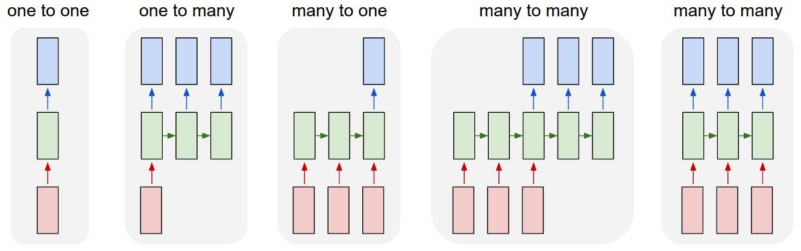
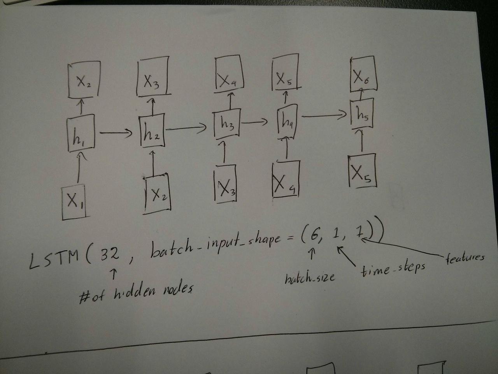
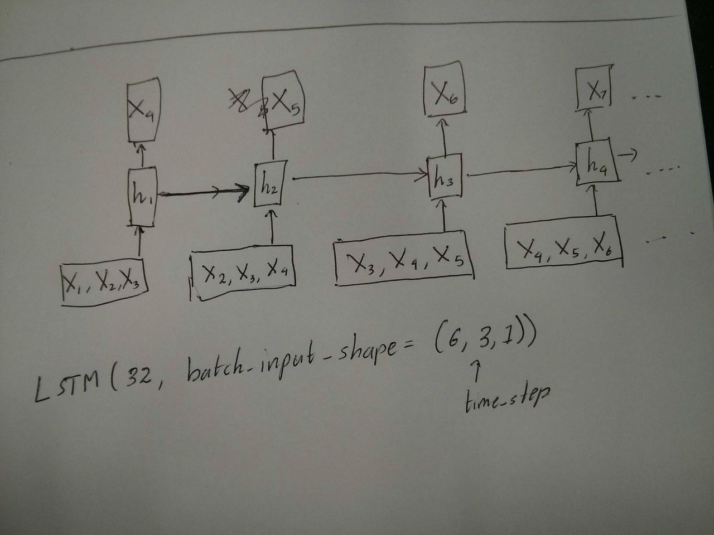

Understanding Keras LSTMs
I am trying to reconcile my understand of LSTMs and pointed out here in this post by Christopher Olah implemented in Keras. I am following the blog written by Jason Brownlee for the Keras tutorial. What I am mainly confused about is,
- The reshaping of the data series into
[samples, time steps, features]and, - The stateful LSTMs
Lets concentrate on the above two questions with reference to the code pasted below:
# reshape into X=t and Y=t+1 look_back = 3 trainX, trainY = create_dataset(train, look_back) testX, testY = create_dataset(test, look_back) # reshape input to be [samples, time steps, features] trainX = numpy.reshape(trainX, (trainX.shape[0], look_back, 1)) testX = numpy.reshape(testX, (testX.shape[0], look_back, 1)) ######################## # The IMPORTANT BIT ########################## # create and fit the LSTM network batch_size = 1 model = Sequential() model.add(LSTM(4, batch_input_shape=(batch_size, look_back, 1), stateful=True)) model.add(Dense(1)) model.compile(loss='mean_squared_error', optimizer='adam') for i in range(100): model.fit(trainX, trainY, nb_epoch=1, batch_size=batch_size, verbose=2, shuffle=False) model.reset_states()
Note: create_dataset takes a sequence of length N and returns a N-look_back
array of which each element is a look_back length sequence.
What is Time Steps and Features?
As can be seen TrainX is a 3-D array with Time_steps and Feature being the
last two dimensions respectively (3 and 1 in this particular code). With
respect to the image below, does this mean that we are considering the many
to one case, where the number of pink boxes are 3? Or does it literally mean
the chain length is 3 (i.e. only 3 green boxes considered). 
Does the features argument become relevant when we consider multivariate series? e.g. modelling two financial stocks simultaneously?
Stateful LSTMs
Does stateful LSTMs mean that we save the cell memory values between runs of
batches? If this is the case, batch_size is one, and the memory is reset
between the training runs so what was the point of saying that it was
stateful. I'm guessing this is related to the fact that training data is not
shuffled, but I'm not sure how.
Any thoughts? Image reference: http://karpathy.github.io/2015/05/21/rnn- effectiveness/
Edit 1:
A bit confused about @van's comment about the red and green boxes being equal.
So just to confirm, does the following API calls correspond to the unrolled
diagrams? Especially noting the second diagram (batch_size was arbitrarily
chosen.): 
Edit 2:
For people who have done Udacity's deep learning course and still confused about the time_step argument, look at the following discussion: https://discussions.udacity.com/t/rnn-lstm-use-implementation/163169
Update:
It turns out model.add(TimeDistributed(Dense(vocab_len))) was what I was
looking for. Here is an example: https://github.com/sachinruk/ShakespeareBot
Update2:
I have summarised most of my understanding of LSTMs here: https://www.youtube.com/watch?v=ywinX5wgdEU
Answer
First of all, you choose great tutorials(1,2) to start.
What Time-step means : Time-steps==3 in X.shape (Describing data shape)
means there are three pink boxes. Since in Keras each step requires an input,
therefore the number of the green boxes should usually equal to the number of
red boxes. Unless you hack the structure.
many to many vs. many to one : In keras, there is a return_sequences
parameter when your initializing LSTM or GRU or SimpleRNN. When
return_sequences is False (by default), then it is many to one as
shown in the picture. Its return shape is (batch_size, hidden_unit_length),
which represent the last state. When return_sequences is True, then it is
many to many. Its return shape is (batch_size, time_step,
hidden_unit_length)
Does the features argument become relevant : Feature argument means "How
big is your red box" or what is the input dimension each step. If you want
to predict from, say, 8 kinds of market information, then you can generate
your data with feature==8.
Stateful : You can look up the source code. When initializing the state,
if stateful==True, then the state from last training will be used as the
initial state, otherwise it will generate a new state. I haven't turn on
stateful yet. However, I disagree with that the batch_size can only be 1
when stateful==True.
Currently, you generate your data with collected data. Image your stock
information is coming as stream, rather than waiting for a day to collect all
sequential, you would like to generate input data online while
training/predicting with network. If you have 400 stocks sharing a same
network, then you can set batch_size==400.
Suggest
First of all, you choose great tutorials(1,2) to start.
What Time-step means : Time-steps==3 in X.shape (Describing data shape)
means there are three pink boxes. Since in Keras each step requires an input,
therefore the number of the green boxes should usually equal to the number of
red boxes. Unless you hack the structure.
many to many vs. many to one : In keras, there is a return_sequences
parameter when your initializing LSTM or GRU or SimpleRNN. When
return_sequences is False (by default), then it is many to one as
shown in the picture. Its return shape is (batch_size, hidden_unit_length),
which represent the last state. When return_sequences is True, then it is
many to many. Its return shape is (batch_size, time_step,
hidden_unit_length)
Does the features argument become relevant : Feature argument means "How
big is your red box" or what is the input dimension each step. If you want
to predict from, say, 8 kinds of market information, then you can generate
your data with feature==8.
Stateful : You can look up the source code. When initializing the state,
if stateful==True, then the state from last training will be used as the
initial state, otherwise it will generate a new state. I haven't turn on
stateful yet. However, I disagree with that the batch_size can only be 1
when stateful==True.
Currently, you generate your data with collected data. Image your stock
information is coming as stream, rather than waiting for a day to collect all
sequential, you would like to generate input data online while
training/predicting with network. If you have 400 stocks sharing a same
network, then you can set batch_size==400.